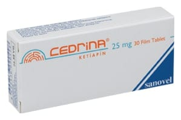

Cedrina 25 mg Film Kaplı Tablet, 60 Tablet

Ne için kullanılır
KT · Bölüm 1CEDRİNA, çentiksiz, pembe renkli, yuvarlak, film kaplı tablettir. CEDRİNA, 30 ve 60 film tabletlik ambalajlarda sunulmaktadır. CEDRİNA etkin maddesi ketiapin olan, antipsikotikler (psikiyatrik hastalıkların tedavisinde kullanılan ilaçlar) olarak adlandırılan ilaç grubuna ait bir ilaçtır.
CEDRİNA aşağıdaki hastalıkların tedavisinde etkilidir:
• Bipolar bozukluğa eşlik eden majör depresif ataklar: Bu durumda kendinizi üzgün hissedersiniz. Karamsarlık, suçluluk, enerji kaybı, iştah azalması ve uykusuzluk hissedebilirsiniz.
• Bipolar bozuklukta orta-ileri derece mani atakları: aşırı coşkulu, heyecanlı, mutlu, meraklı veya hiperaktif olursunuz (uykuya her zamankinden daha az ihtiyaç duyar, daha konuşkan olur, düşüncelerin veya fikirlerin hızla akıp geçtiğini fark edebilirsiniz) ya da saldırgan veya yıkıcı tavırlar dahil karar verme yeteneğinizde zafiyet oluşur.
• Daha önce ketiapin tedavisine cevap vermiş olan bipolar bozukluğu olan hastalarda mani ve depresif atakların nüks etmesinin önlenmesinde.
• Şizofreni: gerçekte var olmayan şeyleri duyabilir veya hissedebilirsiniz; gerçek olmayan şeylere inanırsınız ya da garip şüphe, endişe, kafa karışıklığı, suçluluk, gerginlik, can sıkıntısı hissedersiniz.
Kendinizi iyi hissetseniz bile doktorunuz CEDRİNA reçetenizi yazmaya devam edebilir.